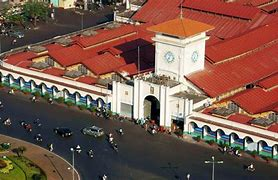

Ho Chi Minh City, commonly and formerly officially known as Saigon, is the largest city in Vietnam, situated in the south. In the southeastern region, the city surrounds the Saigon River and covers about 2,061 square kilometres (796 square miles). Prior to Vietnamese settlement in the 17th century, the city was a scarcely populated area that had been part of historic empires of Funan, Chenla, and Cambodia. With the arrival of Vietnamese, the area became more populated and officials began establishing the city from 1623 to 1698. After it was ceded by the last Vietnamese dynasty to the French in 1862, the name Saigon was adopted and the city underwent urbanization to become a financial center in the region. The city was the capital of South Vietnam until the end of the Vietnam War with North Vietnamese victory in 1975. In 1976, the government of the unified Vietnam renamed Saigon in honor of Hồ Chí Minh.The primary economic center of Vietnam, it is also an emerging international destination.
Ho Chi Minh City has gone by several different names during its history, reflecting settlement by different ethnic, cultural and political groups. Originally a trading port city of the Khmer Empire known as Prey Nokor, it is still known as Prey Nokor to Cambodians today. In time, under the control of the Vietnamese, it was officially renamed Gia Dinh (嘉定), a name that was retained until the time of the French conquest in the 1860s, when it adopted the name Sài Gòn, westernized as Saïgon, although the city was still indicated as 嘉定 on Vietnamese maps written in Chữ Hán until at least 1891. The current name, Ho Chi Minh City, was given after reunification in 1976 to honor Ho Chi Minh.[nb 1] Even today, however, the informal name of Sài Gòn remains in daily speech. However, there is a technical difference between the two terms:
The earliest settlement in the area was a Funan temple at the location of the current Phụng Sơn Buddhist temple, founded in the 4th century AD. A settlement called Baigaur was established on the site in the 11th century by the Champa. Baigaur was renamed Nokor around 1145, Nokor grew on the site of a small fishing village and area of forest. The first Vietnamese people crossed the sea to explore this land completely without the organization of the Nguyễn Lords. Thanks to the marriage between Princess Nguyễn Phúc Ngọc Vạn - daughter of Lord Nguyễn Phúc Nguyên - and the King of Cambodia Chettha II in 1620, the relationship between Vietnam and Cambodia became smooth, and the people of the two countries could freely move back and forth. Vietnamese settlers began to migrate to the area of Dong Nai. Before that the Funanese, Khmer, and Cham had lived there.
Prior to Vietnamese settlement in the 17th century, the city was a scarcely populated area that had been part of historic empires of Funan, Chenla, and Cambodia. With the arrival of Vietnamese, the area became more populated and officials began establishing the city from 1623 to 1698. After it was ceded by the last Vietnamese dynasty to the French in 1862, the name Saigon was adopted and the city underwent urbanization to become a financial center in the region. The city was the capital of South Vietnam until the end of the Vietnam War with North Vietnamese victory in 1975. In 1976, the government of the unified Vietnam renamed Saigon in honor of Hồ Chí Minh. The primary economic center of Vietnam, it is also an emerging international destination, with popular landmarks related to remnants of its history showcased through its architecture. A major transportation hub, the city hosts the Tan Son Nhat International Airport, the busiest airport in Vietnam. Sài Gòn or Thành phố Hồ Chí Minh is also undergoing construction of educational institutions and transportation, and also serves as a major media and entertainment outlet.With popular landmarks related to remnants of its history showcased through its architecture. A major transportation hub, the city hosts the Tan Son Nhat International Airport, the busiest airport in Vietnam. Sài Gòn or Thành phố Hồ Chí Minh is also undergoing construction of educational institutions and transportation, and also serves as a major media and entertainment outlet. It's abbreviated TP.HCM, and translated as Ho Chi Minh City, abbreviated HCMC, and in French as Hô-Chi-Minh-Ville (the circumflex is sometimes omitted), abbreviated HCMV. The name commemorates Ho Chi Minh, the first leader of North Vietnam. This name, though not his given name, was one he favored throughout his later years. It combines a common Vietnamese surname (Hồ, 胡) with a given name meaning "enlightened will" (from Sino-Vietnamese 志 明; Chí meaning 'will' or 'spirit', and Minh meaning 'light'), in essence, meaning "light bringer". Nowadays, "Saigon" is commonly used to refer to the city's central business districts, whereas "Ho Chi Minh City" is used to refer to the whole city.
Scattered from time immemorial. The period from 1623 to 1698 is considered the period of the formation of later Saigon. In 1623, Lord Nguyen sent a mission to ask his son-in-law, King Chey Chettha II, to set up tax collection stations in Prey Nokor (Saigon) and Kas Krobei (Ben Nghe). Alhough this was a deserted jungle area, it was located on the traffic routes of Vietnamese, Chinese,... to Cambodia and Siam. The next two important events of this period were the establishment of the barracks and residence of Vice King Ang Non and the establishment of a palace at Tan My (near the present-day Cong Quynh – Nguyen Trai crossroads). It can be said that Saigon was formed from these three government agencies.
The dry season lasts from December to April with highest temperature recorded was 40 degrees Celcius and the lowest one was 13.8 degrees Celsius. Best Time to Visit Ho Chi Minh city For people with the first time to Ho Chi Minh City, the best time to visit this dynamic center of Vietnam is during the drier months, from December to March. During this time, temperatures range between 21 and 34 degrees Celsius. Many visitors also visit in late January or early February to enjoy Vietnamese Tet Festival (Vietnamese New Year). As the whole country joins in the festivities, the prices are higher and getting around may be difficult because of the large numbers of tourists. Foods in Ho Chi Minh City Saigon or Ho Chi Minh city is a cultural hotpot where people from many regions of the country lives. That's why you can find food from nearly every corner of Vietnam in its authentic style or Saigon version as well.
In 1949, former Emperor Bảo Đại made Saigon the capital of the State of Vietnam with himself as head of state. In 1954, the Geneva Agreement partitioned Vietnam along the 17th parallel (Bến Hải River), with the communist Việt Minh, under Ho Chi Minh, gaining complete control of the northern half of the country, while the southern half gaining independence from France. The State officially became the Republic of Vietnam when Bảo Đại was deposed by his Prime Minister Ngô Đình Diệm in the 1955 referendum, with Saigon as its capital. On 22 October 1956, the city was given the official name, Đô Thành Sài Gòn ("Capital City Saigon"). After the decree of 27 March 1959 came into effect, Saigon was divided into eight districts and 41 wards. In December 1966, two wards from old An Khánh Commune of Gia Định, were formed into District 1, then seceded shortly later to became District 9. In July 1969, District 10 and District 11 were founded, and by 1975, the city's area consisted of eleven districts, Gia Định, Củ Chi District (Hậu Nghĩa) and Phú Hòa District (Bình Dương). Saigon served as the financial, industrial and transport center of the Republic of Vietnam. In the late 1950s, with the U.S. providing nearly $2 billion in aid to the Diệm regime, the country's economy grew rapidly under capitalism; by 1960, over half of South Vietnam's factories were located in Saigon. However, beginning in the 1960s, Saigon experienced economic downturn and high inflation, as it was completely dependent to U.S. aids and imports from other countries. As a result of widespread urbanization, with the population reaching 3.3 million by 1970, the city was described by the USAID as being turned "into a huge slum". The city was also suffered from "prostitutes, drug addicts, corrupt officials, beggars, orphans, and Americans with money", and according to Stanley Karnow, it was "a black-market city in the largest sense of the word". On 28 April 1955, the Vietnamese National Army launched an attack against Bình Xuyên military force in the city. The battle lasted until May, killing an estimated 500 people and leaving about 20,000 homeless. Ngô Đình Diệm then later turned on other paramilitary groups in Saigon, including the Hoa Hao Buddhist reform movement. On 11 June 1963, Buddhist monk Thích Quảng Đức burned himself in the city, in protest of the Diệm regime. On 1 November of the same year, Diệm was assassinated in Saigon, in a successful coup by Dương Văn Minh. During the 1968 Tet Offensive, communist forces launched a failed attempt to capture the city. On 30 April 1975, Saigon fell, ending the Vietnam War with a victory for North Vietnam, and the city came under the control of the Vietnamese People's Army.